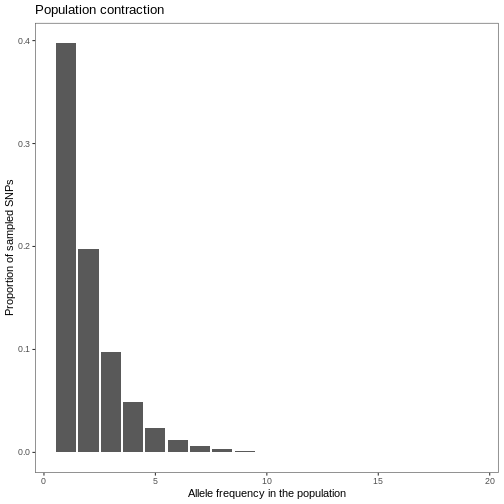
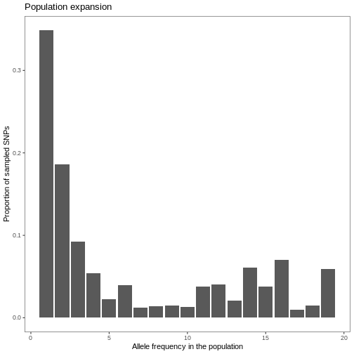

Working with population genetic data
Last updated on 2023-06-01 | Edit this page
Pop gen data
Overview
Questions
- What is genetic diversity?
- What does genetic diversity say about community assembly?
- What are common summaries of genetic diversity within species and communities?
- What are common sequence file formats?
- How do you read in and manipulate sequence data?
- How do you visualize and summarize sequence data?
Objectives
After following this episode, we intend that participants will be able to:
- Understand what genetic diversity is
- Visualize genetic diversity distributions
- Connect genetic diversity distributions to Hill numbers
- Identify key features of different sequence data formats
- Import population genetic data in multiple formats into the R environment
- Manipulate pop gen data by adding and removing sequences
- Calculate genetic diversity \(\pi\)
- Calculate Hill numbers
- Interpret Hill numbers
Introduction
What is genetic diversity?
GEOBON, in their description of Essential Biodiversity Variables, define intraspecific genetic diversity as:
The variation in DNA sequences among individuals of the same species.
This is a broad definition…
Visualizing genetic diversity
Within-species
SFS visualization
The site frequency spectrum (SFS) is a summary of genetic variants across a population, similar to how abundances are summarized across a community. Specifically, it is the distribution of the allele frequencies of a given set of loci (generally single nucleotide polymorphisms, SNPs), in a population or sample. The best way to gain an intuition for what the SFS is, is to visualize it.

The first bar of this plot indicates derived alleles (i.e. not ancestral) that appear once across the population. Approximately 35% of the sampled SNPs in the genome alignment are these “singletons”. The second bar indicates derived alleles that appear twice across the population, where ~18% of the sampled SNPs are these “doubletons” and so forth.
The shape of the SFS can tell us important information about the demographic history of a population and their history of selection. The above plot corresponds with a population that has experienced demographic stability. A couple other examples of the impact of demographic history on the SFS include:

There are a variety of summary statistics that describe the shape of the SFS. The average number of pairwise nucleotide differences, a.k.a. Tajima’s \(\pi\), where a high value indicates a higher level of genetic diversity in the population, describes the average of the distribution. However, as you’ve seen above, the shape of the distribution contains important information about the population’s history!
Hill numbers of the SFS
In the context of summarizing species abundances, Hill numbers are the effective number of species in a community, where each exponent (q-value) increasingly weights rare species more heavily. The interpretation is similar when summarizing within-population genetic diversity. Hill numbers of within-population allele frequencies convey the effective number of alleles in a population, where each q-value increasingly weights rarer alleles more heavily.
Across species
{{pi across species neutral viz}}
{{pi across species filtering viz}}
{{pi across species competition viz}}
Hill numbers of genetic diversity across species
In the context of summarizing species abundances, Hill numbers are the effective number of species in a community, where each exponent (q-value) increasingly weights rare species more heavily. The interpretation is similar when summarizing genetic diversity. Hill numbers are the effective number species in a community, where each q-value increasingly weights species with lower genetic diversity more heavily. Rather than measuring an effective diversity of abundances, this is an effective diversity of genetic diversities.
Something about correcting for species richness to just get evenness…
Work with pop gen data
Sequences
FASTA
A FASTA file contains one or more DNA sequences, where the DNA sequence is preceded by a line with a carat (“>”) followed by an unique sequence ID:
> seq0010
GATCCCCAATTGGGG
This is perhaps the most common way to store sequence information as it is simple and has historical inertia. For more information, see the the NCBI page.
Alignment
Prior to analysis, sequence data must be aligned if they haven’t been already. A sequence alignment is necessary to identify regions of DNA that are similar or that vary. There are many pieces of software to perform alignments and all have their advantages and disadvantages, but we will choose a single program, Clustal Omega, which is fast and robust for short sequence alignments. While Clustal Omega can be run from the command line, we will use the R package msa to keep everything in the R environment.
First, a FASTA file containing the sequences needs to be read in
using the readDNAStringSet() function.
R
library(msa)
OUTPUT
Loading required package: BiostringsOUTPUT
Loading required package: BiocGenericsOUTPUT
Attaching package: 'BiocGenerics'OUTPUT
The following objects are masked from 'package:stats':
IQR, mad, sd, var, xtabsOUTPUT
The following objects are masked from 'package:base':
anyDuplicated, aperm, append, as.data.frame, basename, cbind,
colnames, dirname, do.call, duplicated, eval, evalq, Filter, Find,
get, grep, grepl, intersect, is.unsorted, lapply, Map, mapply,
match, mget, order, paste, pmax, pmax.int, pmin, pmin.int,
Position, rank, rbind, Reduce, rownames, sapply, setdiff, sort,
table, tapply, union, unique, unsplit, which.max, which.minOUTPUT
Loading required package: S4VectorsOUTPUT
Loading required package: stats4OUTPUT
Attaching package: 'S4Vectors'OUTPUT
The following object is masked from 'package:utils':
findMatchesOUTPUT
The following objects are masked from 'package:base':
expand.grid, I, unnameOUTPUT
Loading required package: IRangesOUTPUT
Loading required package: XVectorOUTPUT
Loading required package: GenomeInfoDbOUTPUT
Attaching package: 'Biostrings'OUTPUT
The following object is masked from 'package:base':
strsplitR
seq_path <- "/Users/connorfrench/Dropbox/Old_Mac/School_Stuff/CUNY/Courses/Spring-2019/Machine-Learning/project/fasta/hypsiboas_seqs_aligned.fas"
seqs <- readDNAStringSet(seq_path)
ERROR
Error in .Call2("new_input_filexp", filepath, PACKAGE = "XVector"): cannot open file '/Users/connorfrench/Dropbox/Old_Mac/School_Stuff/CUNY/Courses/Spring-2019/Machine-Learning/project/fasta/hypsiboas_seqs_aligned.fas'R
seqs
ERROR
Error in eval(expr, envir, enclos): object 'seqs' not foundTo align the sequences using Clustal Omega, we use the
msa function and specify the method as
“ClustalOmega”. There are more arguments that you can use to fine-tune
the alignment, but these are not necessary for the vast majority of
alignments.
R
alignment <- msa(seqs, method = "ClustalOmega")
ERROR
Error in eval(expr, envir, enclos): object 'seqs' not foundR
alignment
ERROR
Error in eval(expr, envir, enclos): object 'alignment' not foundIf after you perform your alignment you find that an individual does
not belong or is negatively impacting the alignment, you have to
manipulate your unaligned sequence data and then re-align the sequences.
For instance, say you didn’t want to include the individual
ind_name in the alignment. First, remove the individual
from the seqs object.
R
# remove individual
seqs_filt <- seqs[!(names(seqs) %in% "Itar128")]
ERROR
Error in eval(expr, envir, enclos): object 'seqs' not foundR
seqs_filt
ERROR
Error in eval(expr, envir, enclos): object 'seqs_filt' not foundThen, realign the new set of sequences.
R
alignment <- msa(seqs_filt, method = "ClustalOmega")
ERROR
Error in eval(expr, envir, enclos): object 'seqs_filt' not foundR
alignment
ERROR
Error in eval(expr, envir, enclos): object 'alignment' not foundThere are quite a few packages in R to work with sequence data, for
example seqinr,
phangorn,
and ape.
ape is the most versatile of these. But before we can use
ape, the alignment must be converted to the ape::DNAbin
format.
R
ape_align <- msaConvert(alignment, type = "ape::DNAbin")
ERROR
Error in eval(expr, envir, enclos): object 'alignment' not foundR
ape_align
ERROR
Error in eval(expr, envir, enclos): object 'ape_align' not foundAlthough not necessary for this workshop, it’s generally advisable to write your DNA alignment to a new file to use later or with other programs.
R
ape::write.FASTA(ape_align, "path/to/alignment.fas")
ERROR
Error in eval(expr, envir, enclos): object 'ape_align' not foundCheck alignment
ape has a useful utility that allows you perform a
series of diagnostics on your alignment to make sure nothing is fishy.
The function can output multiple plots, but let’s just visualize the
alignment plot. If the colors seem jumbled in a region, this indicates
that an alignment error may have occurred and to inspect your sequences
for any problems.
In addition, the function outputs a series of helpful statistics to your console. Ideally, your alignment should have few gaps and a number of segregating sites that is reasonable for the number of sites in your alignment and the evolutionary divergence of the sequences included in the alignment, e.g., for an alignment with 970 sites of a single bird species, around 40 segregating sites is reasonable, but 200 segregating sites may indicate that something went wrong with your alignment or a species was misidentified. In addition, for diploid species a vast majority, if not all of the sites should contain one or two observed bases.
R
library(ape)
OUTPUT
Attaching package: 'ape'OUTPUT
The following object is masked from 'package:Biostrings':
complementR
checkAlignment(ape_align, what = 1)
ERROR
Error in eval(expr, envir, enclos): object 'ape_align' not foundCalculate genetic diversity
Tajima’s pi (“raw” pairwise difference)… Why pairwise deletion rather than full deletion…
R
fas_gendist <- dist.dna(fas, model = "raw", pairwise.deletion = TRUE)
ERROR
Error in eval(expr, envir, enclos): object 'fas' not foundR
fas_gendiv <- median(fas_gendist[upper.tri(fas_gendist)])
ERROR
Error in h(simpleError(msg, call)): error in evaluating the argument 'x' in selecting a method for function 'median': object 'fas_gendist' not foundR
fas_gendist_pop <- lapply(fas_split, dist.dna, model = "raw", pairwise.deletion = TRUE)
ERROR
Error in h(simpleError(msg, call)): error in evaluating the argument 'X' in selecting a method for function 'lapply': object 'fas_split' not foundR
calc_pi <- function(x) {
gd <- median(x[upper.tri(x)])
return(gd)
}
fas_gendiv_pop <- sapply(fas_gendist_pop, calc_pi)
ERROR
Error in h(simpleError(msg, call)): error in evaluating the argument 'X' in selecting a method for function 'sapply': object 'fas_gendist_pop' not foundR
plot(fas_gendiv_pop)
ERROR
Error in h(simpleError(msg, call)): error in evaluating the argument 'x' in selecting a method for function 'plot': object 'fas_gendiv_pop' not foundSNPs
VCF
Here are a few things about a VCF file… tab delimited… fields… size…
Export to genind
A bit about genind and adegenet… If you have many SNPs,
genlight may be a more appropriate format…
vcfR2genind also takes arguments for the function
df2genind from the adegenet package. There are
a couple things we can do to speed up the conversion, like specifying
the ploidy of the file and setting the check.ploidy flag to
FALSE.
To add populations…
R
library(adegenet)
snps_genind <- vcfR2genind(
snps,
n.cores = 1,
ploidy = 2,
check.ploidy = FALSE,
pop = pops
)
snps_genind
Calculate genetic diversity
If you didn’t specify populations when converting or reading in the genind file, do so now…
Individual-based genetic distances… Maybe mention PCA?
R
snps_gendist_ind <- dist(snps_genind, method = "euclidean")
ERROR
Error in eval(expr, envir, enclos): object 'snps_genind' not foundNei’s genetic distance…
R
snps_genpop <- genind2genpop(snps_genind)
ERROR
Error in genind2genpop(snps_genind): could not find function "genind2genpop"R
snps_gendist_pop <- dist.genpop(snps_genpop, method = 1)
ERROR
Error in dist.genpop(snps_genpop, method = 1): could not find function "dist.genpop"FST…
R
library(hierfstat)
OUTPUT
Attaching package: 'hierfstat'OUTPUT
The following objects are masked from 'package:ape':
pcoa, varcompR
snps_hierfstat <- genind2hierfstat(snps_genind)
ERROR
Error in eval(expr, envir, enclos): object 'snps_genind' not foundR
snps_fst <- pairwise.fst(snps_hierfstat, diploid = TRUE)
ERROR
Error in pairwise.fst(snps_hierfstat, diploid = TRUE): could not find function "pairwise.fst"R
hist(snps_fst[upper.tri(snps_fst)])
ERROR
Error in eval(expr, envir, enclos): object 'snps_fst' not foundSummarize genetic diversity
Calculate Hill numbers within species/populations
* Going to need a SNP matrix
Hill numbers of intraspecific allele frequencies are the effective number of SNPs in the population/species.
R
library(hillR)
# columns are SNPs, rows are individuals
# treat it like abundances
intra_hill_1 <- hillR::hill_taxa(snp_matrix, q = 1)
Calculate Hill numbers across species
Need species alignments from ape
R
# calculate pairwise distance matrices
per_species_dist <- lapply(species_alignments, ape::dist.dna, model = "raw", as.matrix = TRUE)
mat_avg <- function(x) {
y <- x[upper.tri(x)]
m <- mean(y)
return(y)
}
per_species_pi <- sapply(per_species_dist, mat_avg)
hist(per_species_pi)